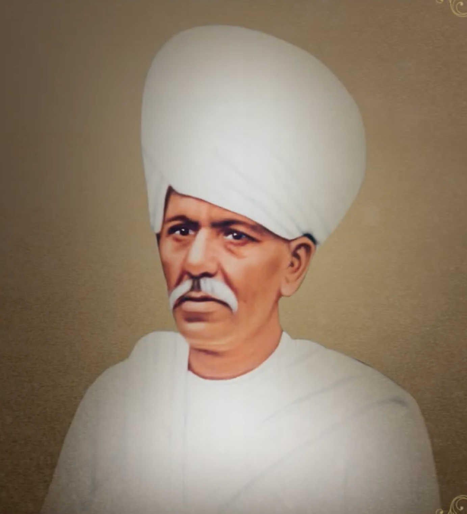

Pujyashree Saubhagyabhai was born in Sayla, a small town in Saurashtra. His father, Shri Lallubhai, served as a state administrator in Limbdi and later settled in Sayla. Saubhagyabhai's close friend was Shri Dungarshibhai Gosalia, an older man of great intelligence who had mastered yogic practices and was known for exhibiting miraculous feats. Saubhagyabhai initially believed Dungarshibhai to be an enlightened soul.
Contents Hide
Pujyashree Saubhagyabhai Lallubhai

Pujyashree Saubhagyabhai
| Pujyashree Saubhagyabhai | |
|---|---|
| Born | V.S. 1880, Sayla (Saurashtra) |
| Passed away | Jeth Vad 10, V.S. 1953, in samadhi |
| Relation | Foremost devotee; divine soulmate of Param Krupalu Dev |
| Titles from Param Krupalu Dev | 'Hridayroop', 'Param vishraam Shri Subhagya' |
| Native place | Sayla — 'the village of the devotees' |
| Father | Shri Lallubhai (state administrator in Limbdi) |
| Letters from Param Krupalu Dev | ~244 (more than one-fourth of all letters) |
| Significance | Instrumental in composition of Atmasiddhi Shastra; attained self-realisation |
Pujyashree Saubhagyabhai Lallubhai was the foremost devotee and divine soulmate of Shrimad Rajchandraji, who addressed him with titles such as 'Hridayroop' and 'Param vishraam Shri Subhagya'. Born in V.S. 1880 in Sayla, Saurashtra — known as 'the village of the devotees' — he was 44 years older than Param Krupalu Dev, yet upon meeting Him at the age of 67, he recognised Param Krupalu Dev's extraordinary spiritual stature with absolute conviction. Param Krupalu Dev wrote approximately 244 letters to Pujyashree Saubhagyabhai — more than a quarter of all His available letters — a testament to the depth of their spiritual bond. He was instrumental in the composition of the Shri Atmasiddhi Shastra, attained self-realisation, and departed in a state of samadhi on Jeth Vad 10, V.S. 1953.
Background
First meeting with Param Krupalu Dev
In the first Bhadarva of V.S. 1946, Pujyashree Saubhagyabhai — then 67 years old — met Param Krupalu Dev for the first time at the home of Chatrabhuj Bechar in Jetpar. Despite the vast age difference (Saubhagyabhai was 44 years older), he instantly recognised Param Krupalu Dev's unparalleled spiritual depth and surrendered himself completely.
Even his long-time friend Shri Dungarshibhai Gosalia, whom Saubhagyabhai had previously revered, later developed faith in Param Krupalu Dev and surrendered to Him as well.
Divine bond with Param Krupalu Dev
The spiritual bond between Param Krupalu Dev and Pujyashree Saubhagyabhai was unlike any other. Of the more than 900 letters of Param Krupalu Dev that are available, approximately 244 — over one-fourth — were written to Saubhagyabhai alone. These letters form some of the most profound spiritual literature in the Jain tradition, covering the deepest aspects of self-realisation, detachment, and the nature of the soul.
Param Krupalu Dev addressed him with the most exalted titles — 'Hridayroop' (the very form of the heart) and 'Param vishraam Shri Subhagya' (the supreme abode of rest). Their relationship transcended the conventional guru-disciple dynamic; it was a communion of two souls across lifetimes.
Role in Atmasiddhi Shastra
Pujyashree Saubhagyabhai was instrumental in the composition of the Shri Atmasiddhi Shastra, Param Krupalu Dev's most celebrated philosophical work. The deep spiritual questions and yearnings that arose in their correspondence and interactions created the very context from which this masterwork was born.
Self-realisation
Through Param Krupalu Dev's guidance and his own unwavering devotion, Pujyashree Saubhagyabhai attained self-realisation. He is revered as one who achieved the highest spiritual state while still in the householder's life.
Passing in samadhi
Pujyashree Saubhagyabhai departed on Jeth Vad 10, V.S. 1953, a Thursday, at 10:50 AM, in a state of samadhi. At the precise moment of his passing, Param Krupalu Dev — who was elsewhere — intuitively took a cold bath, sensing the event without any worldly communication. This extraordinary incident further testified to the transcendental bond between them.